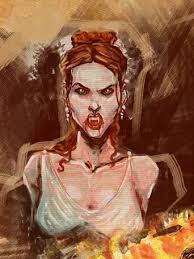
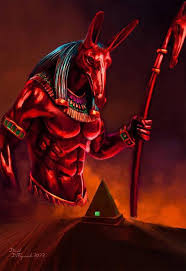

De Bruxas a Ícones
A Virada do Jogo
Da perseguição na Idade Média à veneração moderna:
a jornada histórica dos portadores do "código vermelho".
Introdução: Uma Cor Carregada de Significado
O cabelo ruivo sempre despertou reações extremas ao longo da história. Enquanto hoje é celebrado como símbolo de beleza e exclusividade, por séculos foi associado a características negativas, superstição e até mesmo ao sobrenatural.
Antiguidade: Entre Deuses e Demônios
Grécia Antiga: Os "Vampiros" Rubros
Na Grécia Antiga, acreditava-se que ruivos se transformavam em vampiros após a morte. Esta crença provavelmente surgiu da associação entre a cor vermelha (do cabelo) e o sangue. O historiador grego Heródoto mencionava que os trácios de cabelos ruivos eram considerados particularmente ferozes e belicosos.
Egito Antigo: A Associação com Seth
No Antigo Egito, ruivos eram associados ao deus Seth, divindade do caos, das tempestades e do deserto. Seth era frequentemente representado com cabelos ou pele avermelhados, e essa associação coloriu negativamente a percepção sobre pessoas ruivas na sociedade egípcia.
Roma Antiga: Escravos e Gladiadores
Os romanos frequentemente descreviam povos "bárbaros" do norte (particularmente os celtas) como ruivos. Muitos escravos ruivos eram trazidos das regiões germânicas e celtas, e gladiadores ruivos eram particularmente valorizados por sua aparência exótica e feroz.
Idade Média: O Período Mais Sombrio
A Caça às Bruxas Ruivas
Durante a Idade Média, especialmente entre os séculos XV e XVII, mulheres ruivas foram perseguidas como bruxas com uma frequência desproporcional. A cor era associada ao "fogo do inferno" e considerada evidência de pacto com o demônio.
Por que Ruivas = Bruxas?
- Associação com Fogo
-
O cabelo vermelho era visto como evidência de que a pessoa tinha "roubado fogo do inferno", uma conexão direta com forças demoníacas.
- Medo do Diferente
-
Em sociedades predominantemente morenas, a raridade dos ruivos os tornava alvos fáceis para suspeitas e preconceitos.
- Interpretação Bíblica
-
Judas Iscariotes começou a ser retratado como ruivo na arte medieval, criando uma associação negativa com traição.
Os Julgamentos mais Notórios
| Período | Caso | Consequência |
|---|---|---|
| 1580-1590 | Caça às bruxas na Escócia | Mulheres ruivas queimadas por "possuírem fogo satânico" |
| 1612 | Julgamentos das Bruxas de Lancashire | Várias mulheres ruivas executadas |
| Século XVII | Inquisição Espanhola | Ruivos perseguidos como "descendentes de Judas" |
Renascimento: Judas e a Arte
Judas Iscariotes: O Ruivo Traidor
Durante o Renascimento, a associação entre ruivos e traição se solidificou através da arte. Em pinturas da Última Ceia, Judas Iscariotes era quase sempre retratado como ruivo. Esta convenção artística teve um impacto profundo na percepção social.
Exemplos na Arte
- Giotto (1267-1337): Judas com barba e cabelos ruivos
- Leonardo da Vinci: Judas com cabelos avermelhados na Última Ceia
- El Greco: Várias representações de Judas como ruivo
Impacto Cultural
- Consolidação do estereótipo do "ruivo traiçoeiro"
- Justificação religiosa para o preconceito
- Influência em literatura e cultura popular
Século XIX: O Início da Redenção
Os Pré-Rafaelitas e a Beleza Etérea
No século XIX, o movimento artístico Pré-Rafaelita revolucionou a imagem dos ruivos. Artistas como Dante Gabriel Rossetti e John Everett Millais começaram a retratar mulheres ruivas como figuras etéreas, místicas e extremamente belas.
"As modelos ruivas dos pré-rafaelitas transformaram a percepção do cabelo vermelho de símbolo de bruxaria para ícone de beleza transcendental e espiritualidade."
Rainha Vitória: Uma Influência Real
A Rainha Vitória da Inglaterra tinha uma predileção por retratar-se com cabelos levemente avermelhados em pinturas oficiais. Sua influência ajudou a tornar a cor mais aceitável na alta sociedade.
Século XX: A Era Dourada dos Ruivos
Hollywood e a Glamourização
Década de 1930-1940
- Lucille Ball: Primeira grande estrela ruiva da TV
- Rita Hayworth: Embora naturalmente morena, popularizou o ruivo como cor glamourosa
- Maureen O'Hara: A "Rainha dos Ruivos" de Hollywood
Década de 1950-1960
- Marilyn Monroe: O segredo ruivo da maior loira de Hollywood
- Shirley MacLaine: Estrela com cabelos naturalmente ruivos
- Carol Burnett: Comediante que abraçou sua cor natural
O Segredo de Marilyn Monroe
Um dos fatos mais curiosos: Marilyn Monroe, ícone da loira platinada, era naturalmente ruiva. Nascida Norma Jeane Mortenson, ela tinha cabelos castanho-avermelhados naturais antes de adotar o loiro que a tornou famosa. Sua colorista, Pearl Porterfield, revelou que a base natural de Marilyn era um "ruivo sujo".
Século XXI: Celebração e Empoderamento
Representação Contemporânea
- Nicole Kidman: Trouxe o ruivo de volta ao mainstream nos anos 2000
- Prince Harry: O ruivo real mais famoso do mundo
- Emma Stone: Atriz que abraçou papéis de ruiva icônicos
- Ed Sheeran: Músico que normalizou o ruivo masculino
Movimentos de Empoderamento
Hoje, os ruivos celebram sua singularidade através de:
- Dia Internacional do Ruivo: Celebrado em 7 de setembro
- Festivais de Ruivos: Eventos como o Redhead Day nos Países Baixos
- Mídia e Representação: Mais personagens ruivos positivos
- Conscientização: Combate ao bullying e preconceito
Linha do Tempo Histórica
| Período | Evento | Impacto |
|---|---|---|
| Antiguidade | Associação com deuses e vampiros | Primeiros estereótipos negativos |
| Idade Média | Caça às bruxas ruivas | Perseguição e execuções |
| Renascimento | Judas retratado como ruivo | Estereótipo religioso da traição |
| Século XIX | Arte Pré-Rafaelita | Primeira valorização estética |
| Século XX | Hollywood e celebridades | Glamourização e popularização |
| Século XXI | Celebração da diversidade | Empoderamento e aceitação |
Conclusão: Da Perseguição ao Empoderamento
A jornada histórica dos ruivos é um testemunho poderoso de como a percepção humana pode transformar completamente o significado de uma característica física. O que foi uma vez marca de bruxaria e traição tornou-se símbolo de beleza, exclusividade e força.
Hoje, ser ruivo é celebrado como uma característica única que conecta portadores a uma história rica e complexa - uma história de superação, resiliência e finalmente, de orgulho.